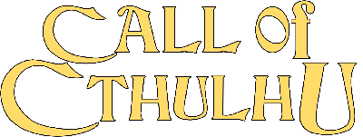

M.A.G.U.S.
A M.A.G.U.S. egy, az 1993-as, első kiadása óta nagy magyarországi népszerűségnek örvendő, magyar fejlesztésű szerepjáték a Valhalla Páholy gondozásában. Többször átdolgozott és kiegészítőkkel bővült játékrendszere a 100 oldalú (fiktív) dobókockára (röviden: k100) épül, eltekintve a 20 oldalút használó 2004-es kiadású Alapkönyvtől. Az egyebek között emberek, orkok, törpék és elfek lakta komplex fantáziavilága, Satralis, azon belül is elsősorban Ynev számos - a játékot támogató céllal íródott - regényben és novellában köszön vissza. Társas és gyűjtögetős kártyajáték változata is készült.
Dungeons & Dragons
A Dungeons & Dragons (rövidítve: DnD vagy D&D) egy fantasy stílusú asztali szerepjáték, amit először 1974-ben adott ki a TSR; tulajdonosa Ernest Gary Gygax (elhunyt: 2008-ban), Dave Arnesonnal (elhunyt: 2009-ben) karöltve egyben tervezője is volt a játéknak. Manapság a Wizards of the Coast, a Hasbro egyik leányvállalata adja ki a játékot. A wargaming -ből nőtte ki magát, eredetileg a Chainmail játék szabályait használva. A D&D megjelenése sokak szerint a modern szerepjátékok és a szerepjátékipar kezdete.
Earthdawn
Az Earthdawn egy asztali szerepjáték, ami a ma ismert földi világunk távoli, homályba vesző múltjában, egy poszt-apokaliptikus fantasy világban játszódik. A játék első kiadása 1993-ban jelent a FASA Corporation jóvoltából.
A játék alapvető jellegzetességei sok hasonlóságot mutatnak a sokak által ismert Dungeons & Dragons szerepjátékkal, de az Earthdawn készítői sokkal inkább az olyan játékokból merítettek ihletet, mint például a RuneQuest. Nem valamiféle univerzális szabályrendszerhez próbáltak toldozva-foltozva háttérvilágot keríteni, hanem a világ és a szabályok vonatkozásában teljesen koherens egységet alkottak. Az Earthdawn szabályai szorosan illeszkednek a világhoz, amit a mágia részletesen kidolgozott metafizikája tesz pazarrá.
Call of Cthulhu

A Call of Cthulhu egy horror stílusú asztali szerepjáték, amelyet H. P. Lovecraft azonos című története és a hozzá kapcsolódó Cthulhu Mythos publikációk inspiráltak. A játékot, melyre gyakran a CoC rövidítéssel hivatkoznak, a Chaosium kiadó terjeszti; először 1981-ben adták ki, és jelenleg a hetedik kiadását éli, licencelt idegen nyelvű kiadások is elérhetőek. A játék szabályrendszere a Chaosium saját Basic Role-Playing (Röviden: BRP) rendszerén alapszik, a horror műfajhoz illő specifikus szabályokkal támogatva. Ilyenek például a józanságra (sanity) és szerencsére vonatkozó speciális szabályok.